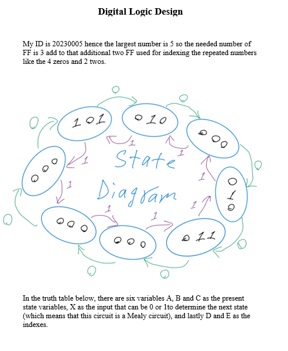
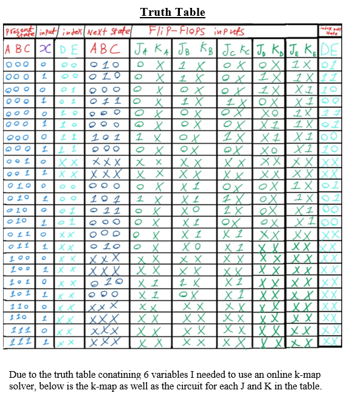
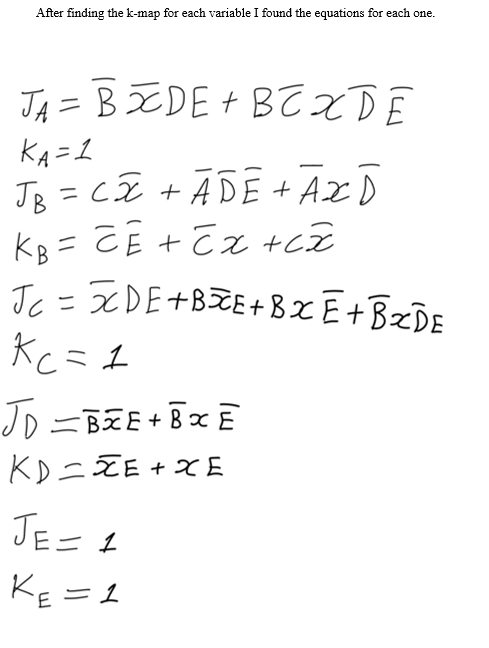
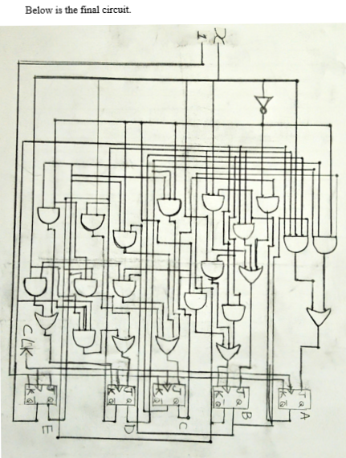

JK Flip-Flop Counter
A bidirectional synchronous digital counter based on a student ID sequence, implemented using JK flip-flops with full K-map minimization and state diagram design.
Project Overview
This Digital Logic Design project implements a bidirectional synchronous counter whose sequence is derived from a student ID number. The counter cycles through the digits of the ID in forward order when an external input is 0, and in reverse order when the input is 1. All flip-flops are triggered by a shared clock signal.
The design process covers state diagrams, excitation tables, Karnaugh map simplifications, and the derivation of J and K input equations for each flip-flop.
Example Counter Sequence (ID: 20198765)
INPUT = 0 — Forward
INPUT = 1 — Reverse
Implemented Features
ID-Based Counter Sequence
Forward and reverse sequences derived from student ID digits
Synchronous Logic
All flip-flops triggered by a common clock signal
External Direction Control
1-bit input selects forward (0) or reverse (1) counting
Karnaugh Map Minimization
K-maps used to minimize J and K logic expressions
State Diagrams & Excitation Tables
Full theoretical design documentation
Looping Counter
Cycles continuously through the ID-based sequence
Design Diagrams




Final Project · Digital Logic Design
Princess Sumaya University for Technology